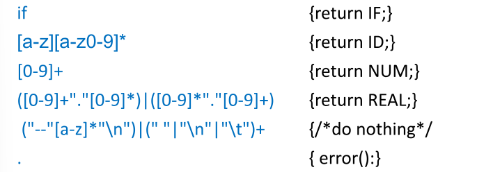
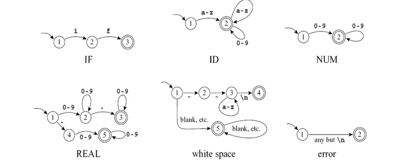
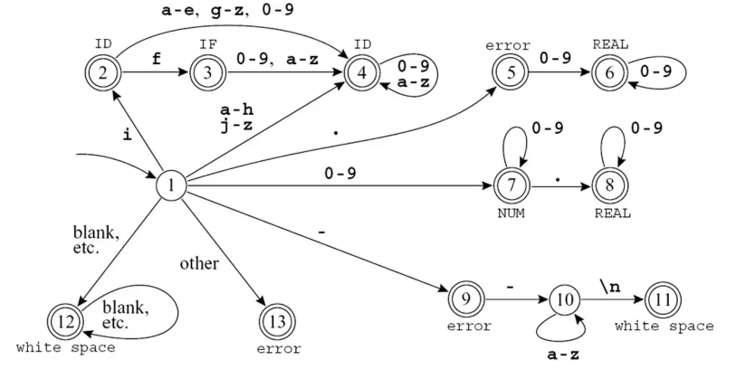
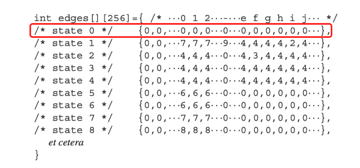
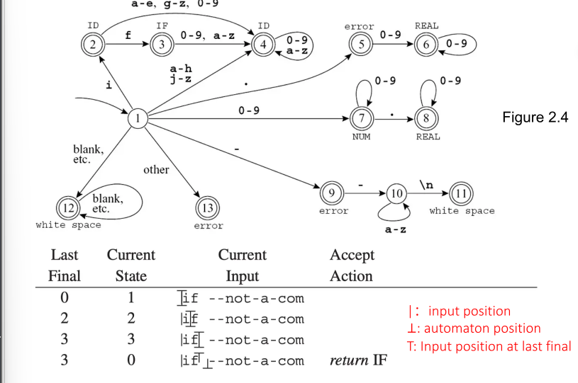
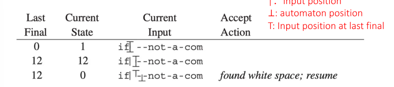
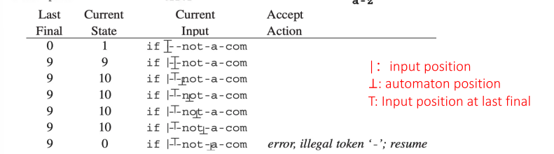
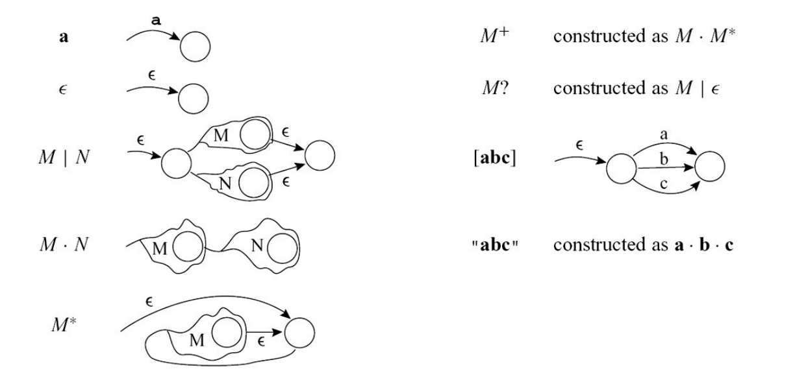
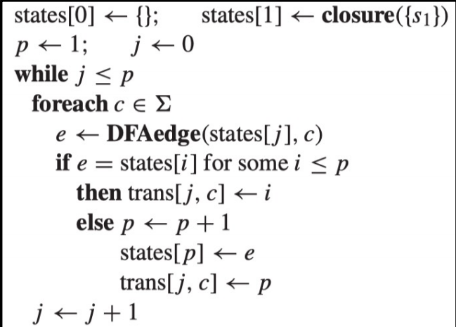
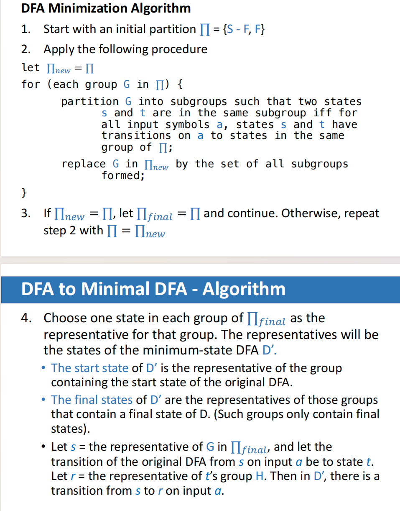

LEXICAL ANALYSIS¶
约 3750 个字 10 张图片 预计阅读时间 13 分钟
编译器概述
编译器的主要工作是将程序从一种语言翻译成另一种语言，通常分为前端和后端。
- 前端 (Front End): 负责程序的分析（Analysis）工作，理解程序的结构和含义。
- 后端 (Back End): 负责程序的综合与生成（Synthesis）工作。
- 中间端 (Middle End): 两者之间通过中间代码生成（IR Generation）分离，并进行与机器无关的代码优化。
分析阶段（Analysis）主要拆分为三个步骤：
- 词法分析 (Lexical Analysis): 将输入的源程序分解为单个的单词或“Token”。
- 语法分析 (Syntax Analysis): 解析程序的短语结构。
- 语义分析 (Semantic Analysis): 计算和检查程序的具体含义。
flowchart TD
A["Description of lexical tokens<br/>(in natural language or in mind)"] -->|Manually| B["Regular Expression"]
B -->|Thompson's Construction| C["Non-Deterministic Finite Automata"]
C -->|Subset Construction, DFA Minimization| D["Deterministic Finite Automata"]
D -->|"e.g., Table-Driven Implementation"| E["Lexer"]Lexical Analyzer¶
任务¶
词法分析器的输入是一串字符流，其主要任务是将其转化为词法标记（Token）流，例如变量名、关键字和标点符号等。在这个过程中，分析器会自动丢弃空白字符（White space）和注释（Comments）。词法分析的接口通常被设计成一个类似 getToken 的函数，每次被调用时返回下一个 Token。
Lexical Tokens¶
Definition
Token 是由一串字符组成的序列，它是编程语言语法中的基本单元。
- 常见分类: 包括标识符（ID，如
foo）、数字（NUM，如73）、浮点数（REAL，如66.1）、关键字（如IF、RETURN）以及各种符号（如COMMA、LPAREN等）。在大多数语言中，像IF这样的保留字不能用作标识符。
Regular Expression¶
为了实现词法分析器，我们首先需要使用**正则表达式**来对编程语言的词法规则进行规范说明。在形式语言中，语言是字符串的集合，而正则表达式可以用有限的描述来指定这些可能是无限的字符串集合。
基本操作¶
或看The Missing Semester中的笔记Regex
正则表达式由以下几种基本操作归纳定义：
- 符号 (Symbol): 例如
a，表示仅包含字符串 "a" 的语言。\(L(a) = \{a\}\) - 空串 (Epsilon, \(\epsilon\)): 表示只包含空字符串
""的语言。\(L(\epsilon) = \{""\}\) - 选择 (Alternation,
M|N): 字符串要么属于M的语言，要么属于N的语言。\(L(M|N) = L(M) \cup L(N)\) - 连接 (Concatenation,
M·N): 将属于M的字符串与属于N的字符串连接。\(L(M·N) = \{xy | x \in L(M), y \in L(N)\}\) - 闭包/重复 (Kleene closure,
M*): 零次或多次重复连接M中的字符串。\(L(M*) = \{x_1x_2...x_n | n \geq 0, x_i \in L(M)\}\)
简写形式¶
为了书写方便，正则表达式提供了一些不增加其描述能力，但更加易读的简写语法：
[abcd]等价于(a|b|c|d)。[b-g]等价于[bcdefg]。M?表示可选（零次或一次出现），等价于(M|$\epsilon$)。M+表示一次或多次重复，等价于(M·M*)。.（句号）代表除换行符以外的任何单个字符。"a.+",引号内的内容作为一个整体
Example

消除歧义规则 (Disambiguation Rules)
在使用正则表达式生成词法分析器（如 Lex, JavaCC 等工具）时，存在两条重要的消除歧义规则：
-
最长匹配原则 (Longest match): 词法分析器总是提取能够匹配某个正则表达式的最长的初始子串作为下一个 Token。例如
if8会被完整地作为一个标识符匹配，而不是拆分成保留字if和数字8。 -
规则优先级 (Rule priority): 对于特定的最长子串，如果在定义中有多个正则表达式都能匹配，则采用最先写下的那条规则。这常用于区分关键字和普通标识符。例如
if既可以匹配保留字if，也可以匹配标识符if，此时应该优先匹配保留字if。
Finite Automata¶
虽然正则表达式方便人类进行定义，但要在计算机程序中实现词法分析器，需要借助于有限状态自动机。
基本定义¶

有限状态自动机包含：
- 一个有限的状态集合（图中的圆圈）。
- 状态之间的边，且每条边都有来自输入字符集的符号标签。
- 一个起始状态(图中的1节点)。
- 若干个终止/接受状态（用双层圆圈表示）。
DFA的合并
可以将以上多个DFA合并成一个，每个终止状态和对应的Type对应

Deterministic Finite Automata (DFA)¶
在 DFA 中，离开同一状态的任何两条边都不具有相同的符号标签。
-
工作原理: 从起始状态出发，对于输入字符串中的每个字符，自动机有且仅有一条匹配的边可走。如果处理完字符串后，自动机停在终止状态，则接受该字符串；如果不在终止状态，或者中途遇到没有合适标签的边可走，则拒绝。
-
代码实现: DFA 通常可以用一个状态转移矩阵来实现（以状态编号和输入字符作为索引），并配合一个映射状态编号到对应 Token 类型动作的数组。为了追踪“最长匹配”，词法分析器会在运行中维护两个变量：最后遇到的终止状态（Last-Final）和对应的输入位置（Input-Position-at-Last-Final）。

词法分析器始终识别输入中最长可匹配的 Token。
词法分析器在遍历输入串时，会用两个变量来追踪“最长匹配”：
-
Last-Final：最近一次进入的终止状态（final state）的编号，表明此时匹配到了一个 token（可能是若干种之一）。 -
Input-Position-at-Last-Final：上一次进入终止状态时，输入流的位置（下标/指针），记录该 token 的末尾。 -
初始化：在词法分析器每次尝试识别一个 token 时，自动机状态设为起始状态，
Last-Final和Input-Position-at-Last-Final都初始化为“无”。 - 扫描输入：每读入一个字符，跟着 DFA 进行状态转移。
- 如果当前状态是终止状态，则更新：
Last-Final = 当前状态编号Input-Position-at-Last-Final = 当前输入位置
- 如果当前状态是终止状态，则更新：
- 失败检测（死状态）：
- 如果没有合适的转移，进入系统的“死状态”（没有任何有效输出转换）。
- 此时，停止本轮匹配。根据
Last-Final信息，可以回溯确定：- 匹配成功的最长 token 类型（由
Last-Final索引）。 - Token 的终止位置（由
Input-Position-at-Last-Final决定）。
- 匹配成功的最长 token 类型（由
- 如果一次都没有遇到终止状态，则报错（非法输入）。
Example

Last-Final信息，可以回溯确定：需要return IF

-,同样识别出一个空格

-,进入死状态，此时根据Last-Final信息，可以回溯确定，是一个error
Non-deterministic Finite Automata (NFA)¶
相较于 DFA，NFA 放宽了限制：
- 在给定同一个输入符号时，可能会有多条边跳转到多个不同的状态。
- 存在特殊的 \(\epsilon\) 边（Epsilon-edges），自动机可以在不消耗任何输入符号的情况下顺着这些边进行状态转移。
- 接受条件: NFA 在遇到分支时需要“猜测”。只要存在任何一种正确的路径选择能够最终到达终止状态，NFA 就会接受该字符串。
为什么需要 NFA？
既然 DFA 和 NFA 在计算能力上是等价的（都能且只能识别正则语言），为什么不直接使用 DFA？ 从正则表达式直接构建 DFA 比较复杂且不直观。而从正则表达式构建 NFA（如使用 Thompson 构造法）非常简单且机械化。NFA 充当了从“人类易读的规则（Regex）”到“机器高效执行的模型（DFA）”之间的中间表示。 NFA 可以使用 \(\epsilon\) 边和多条同标号边，这使得它在表示某些模式时比 DFA 更加紧凑，状态数量通常更少。
From Regex to NFA (Thompson's Construction)¶

Thompson 构造法是一种将正则表达式转化为 NFA 的标准算法。它的特点是基于正则表达式的归纳定义，通过组合小的 NFA 片段来构建大的 NFA。
-
符号 (Symbol)
a: 构造一个简单的 NFA，从起始状态通过标有a的边到达接受状态。graph LR S((Start)) -->|a| E(((End))) -
连接 (Concatenation)
AB: 将 NFA A 的接受状态与 NFA B 的起始状态通过 \(\epsilon\) 边连接（或者直接合并）。graph LR S1((Start A)) -.-> E1(((End A))) E1 -->|ε| S2((Start B)) S2 -.-> E2(((End B))) -
选择 (Union)
A|B: 创建一个新的起始状态，通过 \(\epsilon\) 边分别连接到 A 和 B 的起始状态；创建一个新的接受状态，A 和 B 的接受状态通过 \(\epsilon\) 边连接到它。graph LR S((Start)) -->|ε| S1((Start A)) S((Start)) -->|ε| S2((Start B)) S1 -.-> E1(((End A))) S2 -.-> E2(((End B))) E1 -->|ε| E(((End))) E2 -->|ε| E(((End))) -
闭包 (Closure)
A*: 创建一个新的起始状态和接受状态。- 新起始状态 \(\to\) A 的起始状态 (\(\epsilon\))
- A 的接受状态 \(\to\) 新接受状态 (\(\epsilon\))
- A 的接受状态 \(\to\) A 的起始状态 (\(\epsilon\)) (允许重复)
- 新起始状态 \(\to\) 新接受状态 (\(\epsilon\)) (允许零次)
graph LR S((Start)) -->|ε| S1((Start A)) S1 -.-> E1(((End A))) E1 -->|ε| E(((End))) E1 -->|ε| S1 S -->|ε| E
从NFA到DFA¶
NFA 的问题在于执行时需要“猜测”和“回溯”，这在实际词法分析中开销极大。因此需要通过子集构造法将 NFA 转换为等价的 DFA，其核心思想是“同时模拟所有可能的分支”以避免猜测。
概念¶

- \(\epsilon\)-closure (Epsilon 闭包): 给定 NFA 的一个状态集合 \(S\)，\(closure(S)\) 指的是从 \(S\) 中的状态出发，仅通过 \(\epsilon\) 边（不消耗输入字符）就能到达的所有状态的集合。
- DFAedge(d, c): 假设 \(d\) 是一个 NFA 状态的集合。从集合 \(d\) 出发，消耗一个输入字符 \(c\) 后到达的新 NFA 状态集合，可以通过公式 \(closure(\bigcup_{s \in d} edge(s, c))\) 计算得出。
算法¶
- DFA 的每一个状态本质上是 NFA 状态的集合 (subset)。
- 算法从计算起始状态的 \(\epsilon\)-closure 开始，将其作为 DFA 的起始状态。
- 对于当前得到的每一个 DFA 状态，测试所有的输入字符 \(c\)，计算
DFAedge产生的新状态集。如果这个新状态集之前没出现过，就把它作为一个新的 DFA 状态加入。 - 重复此过程直至无法找到新的 DFA 状态为止。包含 NFA 终止状态的集合即为 DFA 的终止状态。
注意事项
-
该算法不会遍历 DFA 中不可达的状态。
-
实际上，仅有约 n 个可达状态（远小于 \(2^n\) 个状态）。
-
这一策略至关重要，可以避免 DFA 解释器的状态跳转表呈指数级膨胀。
-
-
对于 DFA 的某个状态 \(d\)，只要 \(states[d]\) 中包含了 NFA 的接受状态，该 DFA 状态也应被标记为终态（final）。
-
但仅仅标注为终态还不够：
-
我们必须明确指出当前识别的是哪一种 Token。
-
一个 DFA 状态 \(d\) 可能代表多个 NFA 状态，而这些 NFA 状态中往往有多个是终态（代表不同的 Token 类型）。
-
此时，需要应用正则规则的优先级（通常按规则在源文件的先后顺序决定，先出现者优先）。
-
-
DFA 构造结束后：
-
用于描述状态集的 "states" 数组就可以被丢弃。
-
之后用于词法分析的核心对象就是 DFA 的状态转移表 "trans" 矩阵。
-
DFA Minimization¶
子集构造法生成的 DFA 虽然可以确定性执行，但往往不是最优的，可能会包含大量冗余状态（产生比实际需要更多的状态）。为了减少状态转移表的体积，我们需要进行 DFA 最小化。
等价状态与可区分状态¶
- 等价状态: 如果机器从状态 \(s_1\) 出发能接受某个字符串 \(\sigma\)，当且仅当从状态 \(s_2\) 出发也能接受同一字符串 \(\sigma\)，那么 \(s_1\) 和 \(s_2\) 是等价的。等价状态可以被合并。
- 可区分状态 (Distinguishable): 如果存在某个字符串 \(x\)，使得从 \(s\) 和 \(t\) 出发后，有且仅有一个到达终止状态，那么 \(s\) 和 \(t\) 就是可区分的。
最小化算法 (Dragon Book)¶

- 初始划分: 将 DFA 的所有状态初始划分为两个集合：非终止状态集合 \(S-F\) 和 终止状态集合 \(F\)（空串 \(\epsilon\) 天然区分它们）。
- 迭代分裂: 对于当前划分中的每一个群组 \(G\)，检查其中的状态 \(s\) 和 \(t\)。如果对于任何输入符号 \(a\)，\(s\) 和 \(t\) 会转移到不同群组中的状态，说明它们可区分，需要将该群组进一步分裂。
- 完成合并: 重复上述过程直到没有群组可以继续分裂。最后在每个群组中选出一个“代表”状态，使用这些代表状态重构的即为最小化 DFA。
**D' 的起始状态**为包含原始 DFA 起始状态的群组的“代表”。**D' 的终态**为包含原 DFA 终止状态的各个群组的代表（这些群组只包含终止状态）。
💡 小结：每个等价类只需保留一个代表状态，最小化后的 DFA 的状态跳转全由代表状态之间的转移构成。这保证了新 DFA 的状态个数最少，但语言识别能力等价于原 DFA。
注意： 在词法分析器中，因为不同的终止状态代表了不同的 Token 类型，它们彼此之间是不等价的。因此，初始划分不应该是简单的 \(\{S-F, F\}\)，而应该是 \(\{S-F, F_1, F_2, ..., F_k\}\)（其中 \(F_i\) 表示识别特定 Token 的终止状态集合）。
词法分析器生成工具 (Lex)¶
手工将正则表达式转为 NFA、再转 DFA 并最小化，不仅繁琐且容易出错。Lex（及其常用开源版本 flex）就是一种用于自动完成这一完整流程的词法分析器生成工具。
- 工作机制: Lex 接收一个包含正则表达式规范的输入文件，并自动生成对应的 C 语言源代码文件，该代码中包含一个基于表驱动 DFA 算法的函数
yylex()（等同于前文提到的getToken）。 - Lex 文件的基本结构: Lex 的配置文件以
%%作为分隔符，分为三个主要部分： - 定义部分 (Definitions): 包含被
%{ ... %}包围的 C 语言包含语句（如#include）、全局变量声明；以及为正则表达式定义的宏简写（如digit）。 - 规则部分 (Rules): 是 Lex 文件的核心。每一行包含一个正则表达式和当匹配到该模式时需执行的 C 代码动作 (Action)。在执行时，可以访问内置变量，如
yytext(匹配到的字符串) 和yyleng(字符串长度)。 - 辅助函数部分 (Auxiliary routines): 可以在这里编写供规则部分调用的自定义 C 语言函数，例如
main()函数的定义等。